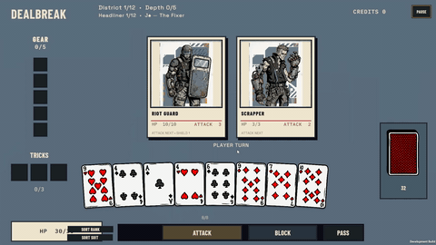
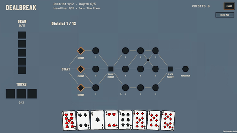
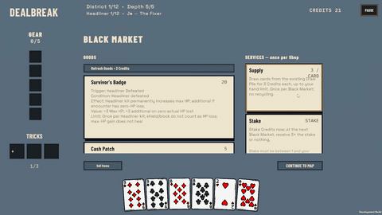
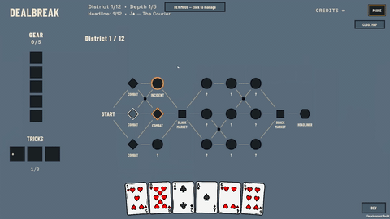
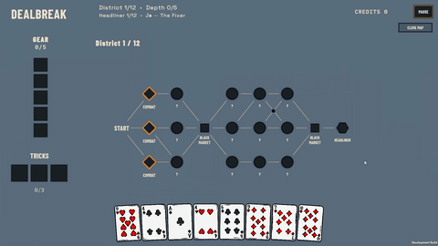
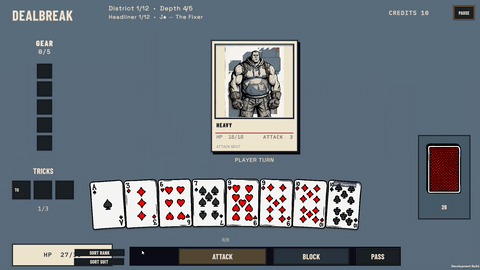
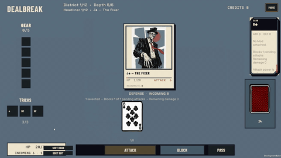
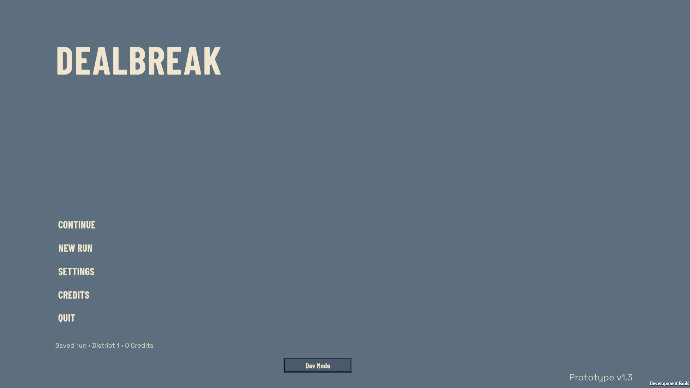
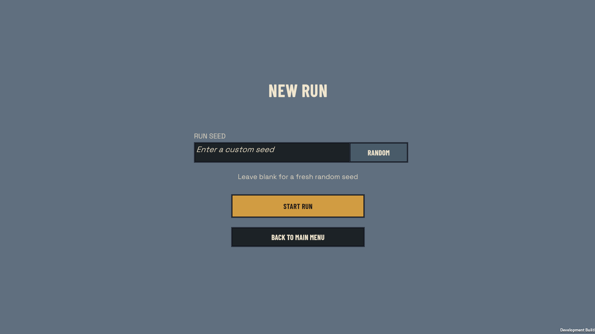
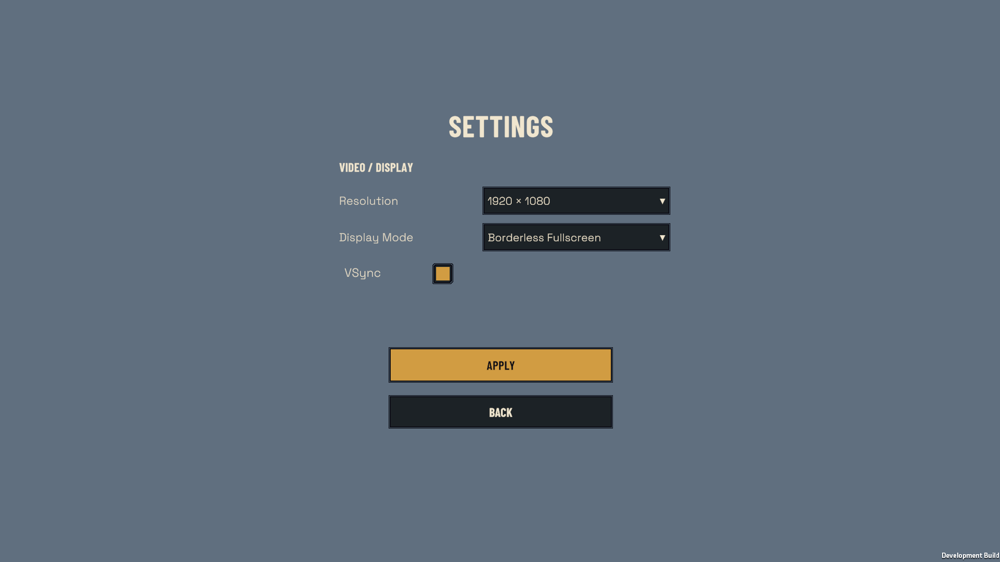

The design goal
Make each card commitment consequential. Players spend cards to attack, commit cards to block, and carry their remaining HP into the next encounter. The same hand must support offense, defense, and the next decision.
My design work
Core combat rules, card-resource trade-offs, branching routes, and interactions between cards and build effects.
My implementation
A playable Unity prototype with data-driven content, seeded runs, and regression tests for gameplay rules.
Dealbreak was previously named CardPG. Source repository links retain the legacy name; the design documents use current terminology.
Attack now, or save the card?
A normal attack commits one card to one selected enemy. During defense, cards cover individual incoming attacks; excess block does not transfer between them. Spending a strong card on damage can leave fewer options for survival.

Pressure from a limited hand
With no automatic per-turn refill, the remaining hand matters. Recover provides an empty-hand escape at the cost of an incoming enemy attack.
A distinct role for Aces
Ace Pairing commits an Ace and one other card as a combined attack. It adds burst potential while spending two defensive resources at once.
Explore the feature decisions →Build decisions beyond combat
Branching routes mix combat with Black Markets, incidents, upgrades, risk nodes, and headliners. Route choices trade rewards against the player's remaining resources and uncertainty.

Gear alters run-level rules. Mods modify individual cards, while Tricks offer tactical changes. These systems give players ways to shape a build instead of only increasing damage.

More gameplay & interface previews







Turning rules into a prototype
ScriptableObjects hold authorable definitions, while runtime instances carry card and run state. A shared effect pipeline supports interactions between Gear, Mods, and card actions.
Separate seeded random streams keep combat, route generation, and Black Market behavior reproducible. Unity EditMode and PlayMode tests cover combat resolution, progression, and inventory interactions.
Development evidence & next evaluation
The October 9 source notes record a passing checkpoint of 329 EditMode and 3 PlayMode tests. This is historical evidence; the portfolio update does not rerun Unity tests.
The next design evaluation is to observe attack-versus-defense decisions, route choices, and Ace Pairing use in human playtests. Final balance and pacing remain under iteration. Detailed feature status is recorded in the dated design documents below.
Design documentation
For a deeper look at rules, decisions, and implementation evidence.
Game Design Document
Design pillars, combat loop, progression, and build systems.
Read GDD →Ace Pairing
A focused case study on burst damage and hand-resource trade-offs.
Read case study →The full Markdown documents are October 9, 2026 snapshots, with terminology updated on October 14, 2026. Mechanics and status evidence remain from the original snapshots.
← Back to selected work